① 会社・基本データ（規模・エリア・実績）
一条工務店は1978年に静岡県浜松市で創業。「家は、性能。」をスローガンに掲げ、断熱・気密・耐震を徹底追求する大手ハウスメーカー。自社工場で建材から設備まで一貫生産することで、高品質・安定価格を実現している。大手ハウスメーカー注文住宅で5年連続1位（2024年実績）という実績が、その市場からの評価を物語っている。
| 項目 | 内容 |
|---|---|
| 会社名 | 株式会社一条工務店 |
| 設立 | 1978年9月（静岡県浜松市にて創業） |
| 創業者 | 大澄賢次郎 |
| 本社 | 東京都江東区木場五丁目10番10号 |
| 浜松本社 | 静岡県浜松市中央区大久保町1227番地6 |
| 資本金 | 4,000万円（単体）／2億7,460万円（グループ計） |
| 売上高 | 5,265億円（グループ計: 5,664億円）※2025年3月時点 |
| 従業員数 | 約6,580名（グループ計: 約7,100名） |
| 年間販売戸数 | 約17,345戸（2024年実績） |
| 対応エリア | 沖縄県・高知県を除く全国（拠点数: 約510ヶ所） |
| 工場・物流拠点 | 47拠点（日本・フィリピン・米国） |
ギネス世界記録（5年連続トリプル認定）
2021年〜2025年の5年連続で、以下3項目のギネス世界記録に認定（2024年実績に対する認定は2025年）。
- 最新年間で最も売れている注文住宅会社
- 最新年間で最も多くの太陽光搭載住宅を建てた会社
- 最大の工業化住宅工場
グループ会社による一貫生産体制
- 株式会社日本産業：住宅部材製造
- フィリピン自社工場：壁パネル・窓・住宅設備の一貫生産
- 米国拠点：2ヶ所
壁パネル・窓・断熱材・住宅設備まで自社工場で製造することで、職人の腕への依存度を下げて品質を安定化させている。ここが大手他社との大きな違い。
② 商品ラインナップと坪単価
2026年現在、坪単価の目安は主力商品のi-smartで80〜100万円がボリュームゾーン。規格住宅のHUGmeなら50〜60万円から選択可能。
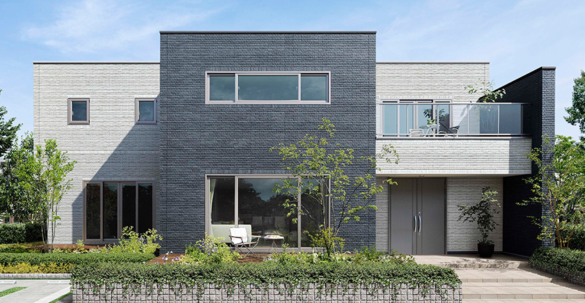
注文住宅（フルオーダー）
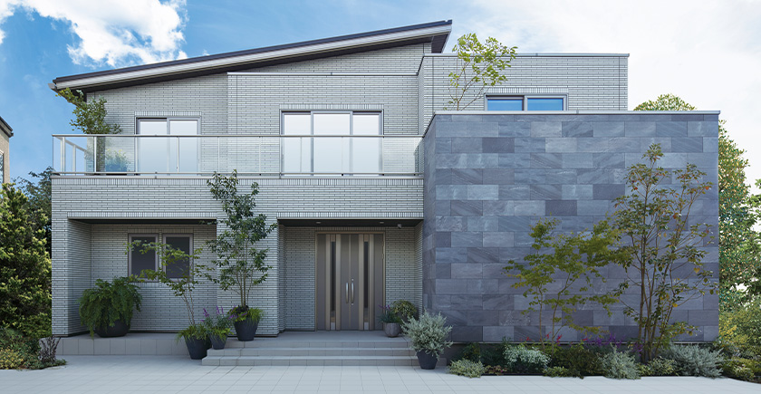
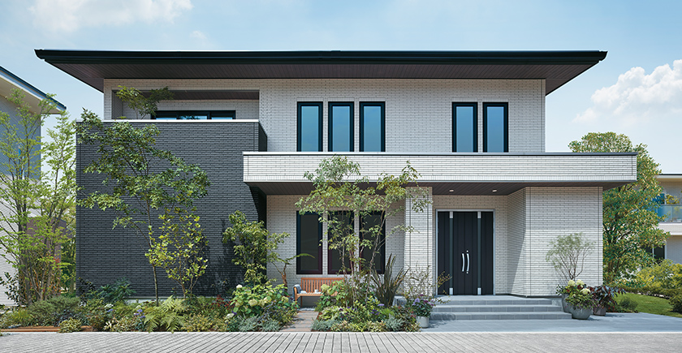
| 商品名 | 坪単価目安（2026年） | 構法 | 主な特徴 |
|---|---|---|---|
| グランスマート | 85〜105万円 | 2×6 ツインモノコック | 最上位モデル。ハイドロテクトタイル・モクリア標準。断熱等級7対応 |
| i-smart（アイスマート） | 80〜100万円 | 2×6 ツインモノコック | 主力商品。全館床暖房・トリプル樹脂サッシ標準。断熱等級7対応 |
| i-cube（アイキューブ） | 75〜90万円 | 2×6 ツインモノコック | i-smartのシンプル版。コストを抑えつつ高性能 |
| グランセゾン | 80〜100万円 | 在来軸組（I-HEAD構法） | 上質な木質インテリア。グレイスシリーズ標準。デザイン性重視 |
| ナチュリア（2026年3月新発売） | 74万円〜（税込） | 2×6 | 北欧テイストの新商品。4スタイル。断熱等級6 |
規格住宅（セミオーダー）
| 商品名 | 坪単価目安（2026年） | 主な特徴 |
|---|---|---|
| アイスマイル（i-smile） | 55〜65万円 | 4,000通りの間取りパターン。全館床暖房・4枚ガラス樹脂サッシ標準 |
| HUGme（ハグミー） | 50〜60万円 | 100種類のプランから選択。1,490万円〜。2倍耐震が唯一標準 |
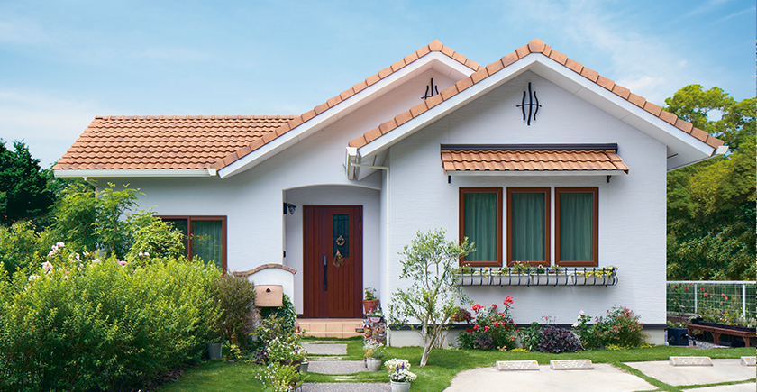
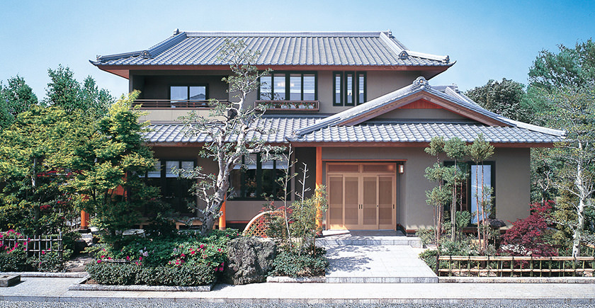
特別仕様
断熱王：i-smart/グランスマートに追加可能。超断熱玄関ドア「DANNJU」＋断熱玄関土間で断熱等級7を確実に達成。UA値0.20以下を狙える特別仕様。
坪単価の推移（i-smart基準・概算）
| 年 | 坪単価目安 | 備考 |
|---|---|---|
| 2015年 | 約55〜60万円 | ウッドショック前 |
| 2018年 | 約57〜62万円 | 年8回ペースで坪5,000円値上げ |
| 2020年 | 約62〜67万円 | 一時横ばい |
| 2023年 | 約75〜85万円 | 資材・人件費高騰で急上昇 |
| 2025年1月 | 約80〜95万円 | 坪3,000円の値上げ実施 |
| 2026年 | 約85〜105万円 | オプション含む平均は約92万円 |
一条工務店は仮契約時点の坪単価が1年間固定される仕組み。値上がりトレンドが続くため、検討が固まったら早期の仮契約にメリットあり。
坪数別の建築総額シミュレーション（i-smart基準）
金利1.5%・35年ローン・頭金なしで試算。本体工事費は坪単価85万円想定。
| 坪数 | 本体工事費 | 建築総額目安 | 月々返済額（35年/1.5%） |
|---|---|---|---|
| 25坪 | 約2,125万円 | 約2,700〜2,750万円 | 約8.3〜8.5万円 |
| 30坪 | 約2,550万円 | 約3,210〜3,310万円 | 約9.9〜10.2万円 |
| 35坪 | 約2,975万円 | 約3,770〜3,820万円 | 約11.6〜11.8万円 |
| 40坪 | 約3,400万円 | 約4,280〜4,380万円 | 約13.2〜13.5万円 |
| 45坪 | 約3,825万円 | 約4,840〜4,940万円 | 約14.9〜15.2万円 |
土地代を含まない建物のみの金額。地盤改良が必要な場合は別途50〜100万円。グランスマートの場合は坪単価+5〜10万円程度。
③ 構造・耐震性能
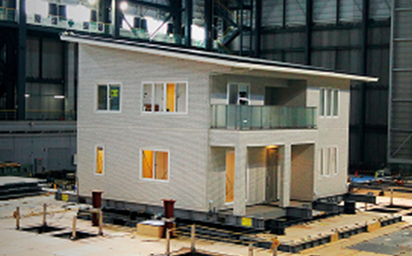
ツインモノコック構法（2×6工法ベース）
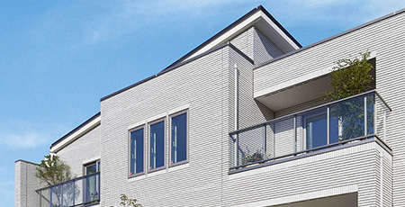
一条工務店の主力構法。航空機やF1マシンに使われるモノコック構造を住宅に応用したもの。床・壁・天井の6面体ボックス構造で外力を受け止め分散する。
| 項目 | 詳細 |
|---|---|
| 工法 | 枠組壁工法（2×6 = ツーバイシックス） |
| 壁厚 | 140mm（2×4の89mmに対し約1.57倍） |
| 構造強度 | 鉛直方向: 2×4の約1.57倍／曲げ応力: 2×4の約2.47倍 |
| 構造方式 | 6面体ボックス構造。床・壁・天井の面全体で外力を受け止め分散 |
| 耐震等級 | 全棟: 耐震等級3（最高等級 = 消防署・警察署と同等） |
| 2倍耐震 | オプション（HUGmeのみ標準）。ミッドプライウォール採用で「建築基準法の2倍の耐震性」を実現 |
「2倍耐震」は業界俗称で「耐震等級5相当」と表現されることがあるが、公式の耐震等級は1〜3までしかない。あくまで建築基準法の2倍の耐震性という位置づけ。
実大振動実験
一条工務店は業界でも突出した回数の振動実験を実施している。
| 項目 | 詳細 |
|---|---|
| 2002年実験 | 「夢の家 I-HEAD構法」で実大建物を三次元加振。阪神・淡路大震災の約1.5倍の力で縦横上下に揺動 |
| 加振回数 | 1ヶ月間で10回以上、震度7クラスの揺れを連続実施 |
| 結果 | 建物の被害はほぼなし。気密性も実験前と同等を維持 |
| 追加実験 | 東日本大震災後、2年間で253回の加振実験を実施 |
| 実験施設 | E-ディフェンス（世界最大の実大三次元震動破壊実験施設）を使用 |
基礎工法
- 高強度コンクリート＋太径鉄筋を組み合わせたベタ基礎
- 国の建築基準を超える強度設計
- 一体打ち工法で水・シロアリの侵入経路となる継ぎ目を排除
グランセゾンの構法（参考）
グランセゾンは在来軸組の「I-HEAD構法」を採用。「夢の家」モノコック構造で、在来軸組＋パネルのハイブリッド。耐震等級3は同じ。
④ 断熱性能
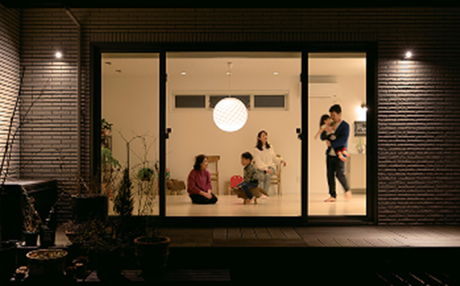
UA値（外皮平均熱貫流率）
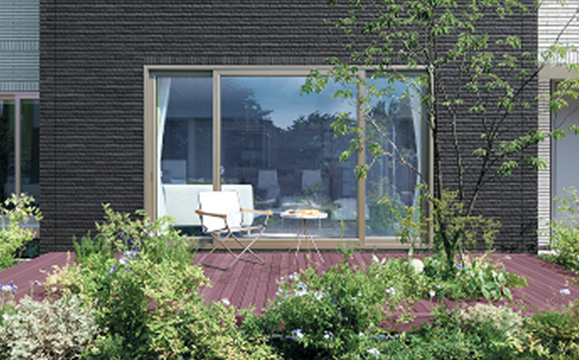
一条工務店の断熱性能は業界最高水準。主力のi-smart/グランスマートは標準仕様でUA値0.25、断熱等級7（最高）を達成している。
| 商品 | UA値 | 断熱等級 |
|---|---|---|
| グランスマート／i-smart（断熱王仕様） | 0.20 W/m²K以下 | 等級7（最高） |
| グランスマート／i-smart（標準） | 0.25 W/m²K | 等級7 |
| i-cube | 0.28 W/m²K | 等級6〜7 |
| グランセゾン | 0.38 W/m²K | 等級5〜6 |
| ナチュリア | 等級6対応 | 等級6 |
| HUGme／アイスマイル | 0.40〜0.50 W/m²K | 等級5 |
| （参考）国の省エネ基準 | 0.87 W/m²K | 等級4 |
外内ダブル断熱構法
一条工務店の断熱の要は、構造用合板の外と内の両方を断熱材で挟む外内ダブル断熱。壁全体で190mmの断熱層を形成し、木材の「熱橋（ヒートブリッジ）」も低減している。
| 部位 | 断熱材 | 厚さ |
|---|---|---|
| 外壁（外側） | 高性能ウレタンフォーム | 50mm |
| 外壁（内側） | 高性能ウレタンフォーム | 140mm |
| 天井 | 高性能ウレタンフォーム | 235mm |
| 床 | 高性能ウレタンフォーム | 140mm |
一般的なグラスウールの約2倍の断熱性能を持つ高性能ウレタンフォームを採用。外側50mm＋内側140mmの「ダブル断熱」で壁全体の断熱厚が190mmに達する。
窓の仕様
| 項目 | スペック |
|---|---|
| ガラス | 防犯ツインLow-Eトリプルガラス（3層） |
| サッシ | オール樹脂サッシ |
| 窓の熱貫流率 | 約0.8 W/m²K |
| 特徴 | クリプトンガス封入・Low-E膜コーティング2枚。一般的なペアガラスの約5倍の断熱性能 |
| 断熱王仕様の玄関ドア | 超断熱玄関ドア「DANNJU（ダンジュ）」。業界最高クラスの断熱玄関ドア |
他社との断熱性能比較
| ハウスメーカー | UA値（代表値） | 断熱等級 |
|---|---|---|
| 一条工務店（i-smart） | 0.25 | 等級7 |
| スウェーデンハウス | 0.38 | 等級6 |
| 三井ホーム | 0.43 | 等級5〜6 |
| 住友林業 | 0.46 | 等級5 |
| 積水ハウス（木造） | 0.46〜0.60 | 等級5 |
| ヘーベルハウス（鉄骨） | 0.55〜0.60 | 等級5 |
| タマホーム（笑顔の家） | 0.23 | 等級7 |
| タマホーム（大安心の家） | 0.55〜0.60 | 等級4〜5 |
大手ハウスメーカーの中で、標準仕様で断熱等級7を達成しているのは一条工務店とタマホーム（笑顔の家）のみ。性能の「数値」で圧倒的な差をつけている。
⑤ 気密性能
C値（相当隙間面積）
| 項目 | 数値 |
|---|---|
| 全棟平均C値 | 0.59 cm²/m² |
| 社内合格基準 | 0.7 cm²/m²以下 |
| 一般住宅の目安 | 1.0〜2.0 cm²/m² |
測定方法の特徴
- 全棟実施：一条工務店は全ての建物でJIS規格準拠の気密測定を実施
- 中間段階で測定：多くのメーカーが完成後に測定するのに対し、一条は断熱・気密施工完了の中間段階で測定。問題があれば即修正可能
- 結果開示：実測値をオーナーに報告書として開示
他社との気密性能比較
| ハウスメーカー | C値（公表データ） | 全棟測定 |
|---|---|---|
| 一条工務店 | 0.59（全棟平均） | 全棟実施 |
| 住友林業 | 非公表 | 希望者のみ |
| 積水ハウス | 非公表 | 実施せず |
| 三井ホーム | 非公表 | 希望者のみ |
| ヘーベルハウス | 非公表 | 実施せず |
| タマホーム | 非公表 | 実施せず |
大手ハウスメーカーでC値を全棟測定・公表しているのは一条工務店だけ。他社は「C値非公表」が多く、実力が不明。数値での比較が可能なことが、一条の大きなアドバンテージ。
⑥ 換気・空調システム
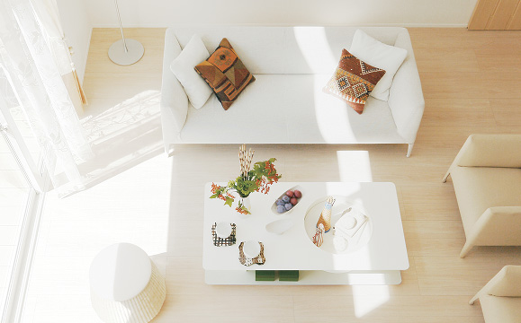
ロスガード90（全棟標準装備）
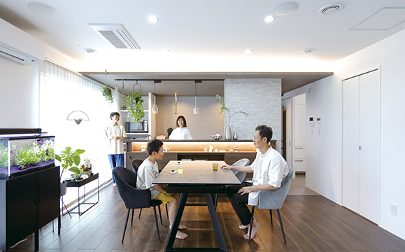
第一種全熱交換型換気システム。一条工務店がパナソニックと共同開発したオリジナル商品。
| 項目 | スペック |
|---|---|
| 方式 | 第一種全熱交換型換気システム |
| 温度交換効率 | 最大90%（世界最高レベル） |
| 共同開発 | パナソニック |
| 暖房費削減効果 | 年間約4万円（一般換気: 約5.9万円 → ロスガード90: 約1.9万円） |
| フィルター | PM2.5対応高性能フィルター（花粉・微粒子を99%カット） |
| メンテナンス | フィルター: 年1回清掃、6ヶ月ごと交換推奨（自分で可能） |
ロスガード90 うるケア（オプション）
冬の全館乾燥問題を解消するオプション。水入れ不要のフルオートで、月電気代約300円。
| 項目 | スペック |
|---|---|
| 機能 | ロスガード90に全館加湿機能を追加 |
| 加湿方式 | ミスト加湿（給水・洗浄フルオート） |
| 加湿にかかる電気代 | 月約300円 |
| メリット | 冬の全館乾燥問題を解消。水入れ不要。シーズンフィルター清掃のみ |
| 対象商品 | i-smart／グランスマート／i-cube |
さらぽか空調（オプション）
床冷房＋デシカント除湿換気のセットオプション。夏も冬も快適な室内環境を実現。
| 項目 | スペック |
|---|---|
| 機能 | 床冷房＋デシカント除湿換気 |
| 夏の仕組み | 床暖房配管に冷水を通し、床面から穏やかに冷却 + デシカント換気で除湿 |
| 冬の仕組み | 通常の全館床暖房 + デシカント換気で加湿 |
| 電気代目安 | 夏: 月約1万円／冬: 月約1.5万円 |
電気代データ（実例）
| 条件 | 年間電気代 | 備考 |
|---|---|---|
| 太陽光13.5kW + 蓄電池7kW搭載 | 約5,137円/年 | 自給率97.6%。売電収入約14.5万円/年 |
| 太陽光なし・全館床暖房のみ | 月1〜1.5万円 | 冬場のピーク時 |
| 太陽光10kW搭載 | 実質光熱費ほぼゼロ | 売電と相殺 |
太陽光＋蓄電池を組み合わせることで、年間電気代5,000円以下を実現した施主もいる。ギネス認定の「太陽光搭載住宅を最も多く建てた会社」だけのことはある。
⑦ デザインと一条ルール
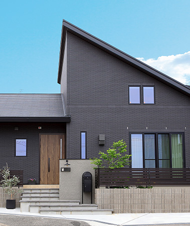
外壁：ハイドロテクトタイル
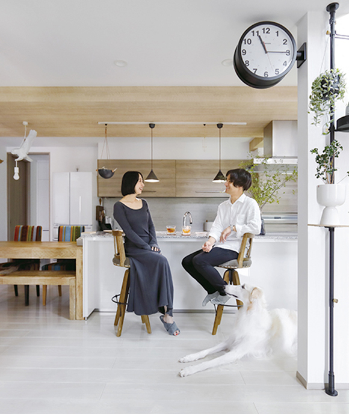
TOTOの光触媒技術「ハイドロテクト」を採用した、メンテナンスフリーの外壁タイル。
| 項目 | 詳細 |
|---|---|
| 技術 | TOTO光触媒技術「ハイドロテクト」をタイルに付与 |
| セルフクリーニング | 太陽光で汚れを分解 → 雨で洗い流す |
| 吸水率 | 3.0%以下。凍害にも強く寒冷地対応 |
| カラー | 5色（2色まで組み合わせ可能） |
| 対象商品 | グランスマート: 標準／i-smart: オプション（坪+数千円） |
| メンテナンス | 塗り替え不要。30年以上の耐久性 |
内装：グレイスシリーズ（グランスマート／グランセゾン標準）
| 設備 | 特徴 |
|---|---|
| グレイスキッチン | 木目同調エンボスパネル。天然木の凹凸感を再現。グラリオカウンター。深型食洗機標準 |
| グレイスバス | マグネット式ミラー・タオルハンガー。間接照明付きグラリオカウンター。4色展開。自動洗浄機能 |
| グレイスドレッサー | ワイドミラー・収納力重視の設計 |
| グレイスフローリング | EBコートフローリング（シートフローリング）。全館床暖房対応。無垢床は不可 |
オリジナル設備の特徴
一条工務店はキッチン・バス・洗面台・収納・窓・玄関ドアまで自社開発。メリットはコスト削減と性能最適化。デメリットは他社製品への交換が困難なこと。
一条ルール（設計制約）の具体例
| カテゴリ | 制約内容 |
|---|---|
| 間取り | 0.5マス（45cm）単位でしか壁を動かせない |
| 外壁 | パラペット屋根のない面は2階建てでも一面同色 |
| タイル | ハイドロテクトタイルは5色、2色までの組み合わせ |
| 窓 | サイズ・配置パターンが限定。大開口は制限あり |
| 総2階 | i-smart／i-cubeは原則総2階（1階と2階の面積をほぼ同じにする必要） |
| ロスガード | 2階の外壁面かつ水回りと接しない場所に設置必須 |
| 玄関 | 断熱性・防犯性重視で選択肢が限定 |
| キッチン | オリジナル品のみ。アイランドキッチンのサイズ変更やカスタマイズに制約 |
一条ルールは「高性能を安定供給するための制約」。デザイン重視の方は住友林業・三井ホームとの比較が必須。契約前に間取りの制約を全て確認することが大切。
⑧ 保証・メンテナンス
| 内容 | 期間 | 条件 |
|---|---|---|
| 構造耐力上主要な部分 | 初期10年（最長30年まで延長可） | 10年目・15年目・20年目の無料点検＋必要な有料メンテを実施 |
| 雨水の侵入を防止する部分 | 初期15年（30年まで延長可） | 15年目の有償補修工事の実施が延長条件 |
| シロアリ予防 | 10年目・20年目に無償実施 | 一条工務店が無料で防蟻処理 |
| アフターサポート | 30年間 | 専用アプリ「i-サポ」で依頼可能 |
定期点検スケジュール
引渡し後: 2ヶ月 → 1年 → 2年 → 5年 → 10年 → 15年 → 20年 → 25年 → 30年
シロアリ対策（防蟻処理）
- 木材に防腐防蟻処理を実施
- 壁内の目に見えない部分も耐久性を確保
- 10年目と20年目のシロアリ予防工事が無償（他社は有償が一般的）
- 一体打ちベタ基礎でシロアリの侵入経路を最小化
他社との保証期間比較
| ハウスメーカー | 初期保証 | 最大延長 | 特徴 |
|---|---|---|---|
| 一条工務店 | 10年（構造） | 30年 | 有償メンテで延長。シロアリ予防10年目・20年目無償 |
| 住友林業 | 30年（長期優良住宅取得時） | 60年 | 96.3%が長期優良住宅取得 |
| 積水ハウス | 30年 | 永年（ユートラスシステム） | 建物がある限り延長可能 |
| ヘーベルハウス | 30年 | 60年 | ホームドクター制度・60年無償点検 |
| 三井ホーム | 10年 | 60年 | 有償点検・メンテで延長 |
| タマホーム | 10年 | 60年（長期優良住宅）／30年 | シロアリ10年保証含む |
一条の初期保証は構造10年（最長30年まで延長可）で、業界では標準的。積水ハウスの永年保証やヘーベルハウスの60年と比べると短い。ただしシロアリ予防の無償提供は大きなメリット。
⑨ 建築期間
| フェーズ | 期間目安 |
|---|---|
| 展示場見学〜仮契約 | 1〜3ヶ月 |
| 仮契約〜本契約（間取り打合せ） | 3〜6ヶ月 |
| 本契約〜着工（詳細設計・確認申請） | 2〜4ヶ月 |
| 着工〜上棟 | 1〜2ヶ月 |
| 上棟〜引渡し | 3〜5ヶ月 |
| 合計（初回来場〜引渡し） | 10〜18ヶ月 |
| 着工〜引渡し | 4〜6ヶ月 |
工場生産の特徴
- 壁パネル・窓・断熱材・住宅設備まで、部材の大部分をフィリピン自社工場で生産
- 現場では主に「組み立て」作業。職人の腕への依存度が低い
- 天候・季節の影響を受けにくく、品質が安定
- 一方で、工場からの部材輸送スケジュールに制約があり、着工待ちが発生することも
「早く建てたい」方は規格住宅（アイスマイル・HUGme）なら打合せ期間を短縮可能。
⑩ 客層・向き不向き
典型的な施主プロファイル
| 属性 | 傾向 |
|---|---|
| 年齢 | 30〜40代が中心 |
| 世帯構成 | 共働きファミリー・子育て世代が多数 |
| 世帯年収 | 600〜800万円がボリュームゾーン |
| 最低年収目安 | 世帯年収400万円〜（HUGmeなら300万円〜も可能） |
| 価値観 | 性能・コスパ重視。「長期的にお得かどうか」で判断するタイプ |
| 情報収集 | YouTube・Instagram・ブログでHMを徹底比較。検討期間は半年〜1年以上 |
一条工務店を選ぶ理由TOP3
- 断熱・気密性能が他社より圧倒的に高い（数値で比較できる）
- 全館床暖房が標準 → 冬でも家中どこでも暖かい
- 光熱費が安くなる → ランニングコストで長期的に元が取れる感覚
施主の特徴
- 「数字で比較する」タイプ。UA値・C値・電気代を他社と表にして比較検討する
- SNSやブログで情報を収集し、展示場に行く前にほぼ決めている層が多い
- 「性能が良いなら見た目は多少妥協できる」という合理的な判断ができる人
向いている人
- 断熱・気密性能を数値で比較したい
- 光熱費を長期的に抑えたい
- 全館床暖房の快適さが欲しい
- 子育てで「ヒートショックのない家」が欲しい
- 性能コスパを重視する合理派
向かない人
- 間取り・デザインの自由度を最優先（→住友林業・三井ホーム）
- 自然素材・無垢の木にこだわりたい
- 鉄骨の安心感・60年超保証が欲しい（→ヘーベル・積水）
- 総額3,000万円以下（→タマホーム・HUGme）
- 設備の将来交換リスクを避けたい
⑪ 他社との比較表
| 比較 | 一条工務店 | 住友林業 | 積水ハウス | タマホーム | 三井ホーム | ヘーベル |
|---|---|---|---|---|---|---|
| 坪単価 | 80〜105 | 80〜130 | 85〜120 | 50〜80 | 80〜130 | 90〜120 |
| UA値 | 0.25 | 0.46 | 0.46〜0.60 | 0.55 | 0.43 | 0.55〜0.60 |
| C値 | 0.59（全棟） | 非公表 | 非公表 | 非公表 | 非公表 | 非公表 |
| 構造 | 木造2×6 | 木造BF | 鉄骨／木造 | 木造軸組 | 木造2×6 | 鉄骨ALC |
| 設計自由度 | △ | ◎ | ◎ | ○ | ○ | ○ |
| 保証（初期） | 10年 | 30年 | 30年 | 10年 | 10年 | 30年 |
| 保証（最大） | 30年 | 60年 | 永年 | 60年 | 60年 | 60年 |
| 全館床暖房 | 標準 | オプ | オプ | なし | オプ | なし |
一条工務店 vs 住友林業
| 比較軸 | 一条工務店 | 住友林業 |
|---|---|---|
| 断熱・気密 | ◎（業界No.1） | ○（高水準だが一条には及ばない） |
| デザイン自由度 | △（一条ルール） | ◎（BF構法で大開口・自由設計） |
| 木の温もり | △（工業製品的） | ◎（無垢床・天然木） |
| コスパ | ◎（性能/価格比は高い） | ○（高価格帯） |
| 向く人 | 性能最重視・光熱費を抑えたい | デザイン・素材にこだわりたい |
一条工務店 vs 積水ハウス
| 比較軸 | 一条工務店 | 積水ハウス |
|---|---|---|
| 断熱・気密 | ◎ | ○ |
| 設計自由度 | △ | ◎（鉄骨の大空間も可能） |
| ブランド力 | ○ | ◎（業界最大手の安心感） |
| アフターサービス | ○ | ◎（永年保証・ストック事業充実） |
| 向く人 | 性能特化 | 長期安心・ブランド・リセールバリュー重視 |
一条工務店 vs タマホーム
| 比較軸 | 一条工務店 | タマホーム |
|---|---|---|
| 価格 | 高め（80〜105万/坪） | 安め（50〜80万/坪） |
| 断熱・気密 | ◎ | ○（笑顔の家ならUA値0.23で同等以上） |
| 品質安定性 | ◎（工場生産） | △（職人差あり） |
| 保証 | 30年 | 10年（延長60年） |
| 向く人 | 性能に投資できる方 | 予算重視・コスパ最優先 |
一条工務店 vs 三井ホーム／ヘーベルハウス
| 比較軸 | 三井ホーム | ヘーベルハウス |
|---|---|---|
| 比較ポイント | 洋風デザイン・スマートブリーズ全館空調 | 鉄骨ALC・耐火・60年保証 |
| 一条との差 | 一条は性能◎、三井はデザイン◎ | 一条は断熱◎、ヘーベルは耐火・耐久◎ |
| 向く人 | 洋風デザイン・立体空間重視 | 都市部3階建て・耐火耐久重視 |
⑫ よくある後悔・失敗事例
後悔1：一条ルールで理想の間取りが実現できなかった
「大きな窓を取りたかったのにサイズ制限で小さくなった」「吹き抜けを広く取りたかったが構造上NGだった」「0.5マス単位の壁移動しかできず、収まりが悪い間取りになった」という声が多い。
契約前に間取りの制約を全て確認する。理想の間取りが一条ルール内で実現可能か設計士に確認を。
後悔2：オリジナル設備縛りで将来の交換が不安
キッチン・バス・洗面・床暖房ヒートポンプなど全てオリジナル品。20〜30年後に交換する際、他社製品に変えられない可能性あり。修理部品も一条から取り寄せる必要があり、対応スピードに不安の声。
「i-サポ」アプリで部品・消耗品は購入可能。ただし設備一式交換時の費用は契約前に確認を。
後悔3：冬の乾燥がひどい
高気密＋全館床暖房の影響で冬の室内湿度が30%前後に低下。肌荒れ・のどの痛み・フローリングの隙間発生を報告する声。
「ロスガード90 うるケア」（オプション）の導入を強く推奨。市販の加湿器だけでは不十分なことも。
後悔4：紹介割引を使い損ねた
展示場に先に行ってしまい、後から知人の紹介が使えなかったケース。最大35万円相当のオプション特典が無効に。
展示場に行く前に必ず紹介手続きを完了する。ネット経由で全国から紹介可能。
後悔5：外構費用が予想以上にかかった
本体工事費に外構・地盤改良・引越し費用は含まれない。外構費用の相場は150〜250万円。当初予算より最終額が高くなった人が8割以上。一条提携外構業者は中間マージン10〜15%あり割高という声も。
外構は複数業者に相見積もりを取る。提携外の業者も検討を。
後悔6：固定資産税が高い
タイル外壁・全館床暖房・屋根一体型太陽光パネルが全て「建物評価額」に加算される。30坪の一条住宅で固定資産税は年約6.7万円（新築減税期間）→ 6年目以降は年約10.5万円。サイディング外壁の一般住宅と比べて年2〜3万円高い。
新築減税（3年間半額、長期優良住宅なら5年間半額）を理解した上で予算に組み込む。
後悔7：太陽光パネルの経年劣化と屋根一体型のリスク
年間0.5〜0.7%の発電量低下（25年後は初期性能の80〜85%）。屋根一体型は交換時に屋根ごとの工事が必要になる可能性。製造メーカー保証は10年（出力保証は20〜25年）。パワーコンディショナーは10〜15年で交換（費用20〜30万円）。
太陽光は「投資」として回収計算を事前に行う。売電価格の低下も考慮を。
後悔8：「どの家も同じに見える」
i-smartの外観は白いタイルのキューブ型が定番で、街中で「一条の家」とすぐわかる。「個性がない」「建売っぽい」という声も。
グランセゾンやナチュリア（2026年新商品）はデザインの幅が広い。タイル色の組み合わせも工夫を。
⑬ まとめ（強み・弱み）
- UA値0.25／C値0.59という業界トップクラスの断熱・気密性能
- 全棟C値測定・開示のみを行う大手唯一のメーカー
- 全館床暖房・トリプル樹脂サッシが標準
- ロスガード90・ハイドロテクトタイル等の高性能オリジナル設備
- 全棟耐震等級3・E-ディフェンスでの豊富な振動実験
- フィリピン自社工場による品質の安定化
- ギネス認定5年連続トリプル（2021〜2025年）
- 一条ルールによる設計自由度の低さ（0.5マス単位、総2階原則）
- オリジナル設備縛りで将来の交換・修理に制約
- 初期保証10年は大手の中では短め（積水・ヘーベルは30年）
- 冬の乾燥問題（うるケアオプション推奨）
- 定価販売で値引き不可
- 外構・固定資産税などの「見えにくいコスト」に注意
こんな人に強くお勧め
「数値で性能を比較して最高水準を選びたい」「冬でも家中どこでも暖かい暮らしがしたい」「光熱費を長期的に抑えたい」という合理的な判断ができる方には、大手ハウスメーカーで最強の選択肢。
顧客満足度データ
オリコン顧客満足度ランキング（ハウスメーカー 注文住宅）では、一条工務店は安定してTOP5入り。
| 年度 | 一条工務店の順位 | スコア |
|---|---|---|
| 2024年 | 総合5位 | 77.1点 |
| 2025年 | 総合5位 | 77.5点 |
| 2026年 | 総合5位 | 77.6点 |
| 地域／項目 | 順位 |
|---|---|
| 北海道 | 1位（80.6点） |
| 関西 | 1位（78.8点） |
| 価格の納得感 | 上位ランクイン |
| 住居の性能 | 上位ランクイン |
寒冷地である北海道で1位を獲得している点は、一条の断熱性能が実生活で評価されている証拠といえる。
一条工務店固有の注意点
仮契約金（申込金）100万円：坪単価を1年間固定する代わりに支払う。解約時は条件付きで返金可能だが、設計費・事務手数料が差し引かれる場合あり。返金条件は口頭ではなく書面で確認すること。
値引き不可：一条工務店は定価販売が原則で、営業担当にも値引き権限がない。費用を下げる手段は以下の3つ：
- 知人紹介：最大35万円相当のオプション特典（キャッシュ値引きではない）
- 親族紹介：建築費×1.5%の割引
- 法人提携：建築費×2.0%の割引